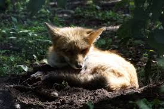

Füchse haben ein flexibles Sozialsystem. Die "Einzelgänger" bzw. Paarformation findet sich genauso wie die Aggregation in Familiengruppen. Letzteres kommt vor allem im
städtischen und suburbanen Raum vor. Diese Familiengruppen bestehen dann meist aus dem dominanten Paar, den aktuellen Welpen und Welpen des Vorjahres. Füchse
sind in erster Linie dämmerungs- und nachtaktiv, tagsüber bekommt man sie so gut wie nie zu sehen. Als Nahrungsopportunisten stellen die Tiere keine besonderen
Ansprüche an ihren Lebensraum: sie können nahezu überall überleben, wo sie genug Nahrung finden.
ANPASSUNGSFÄHIGER
ÜBERLEBENSKÜNSTLER
Natürlicherweise kommen Füchse in Wäldern und Feldern vor und suchen ihre Nahrung auf Wiesen und Äckern, in
Obstgärten und gelegentlich auch auf Bauernhöfen. In den letzten Jahrzehnten haben die Tiere jedoch zunehmend den
Weg in menschliche Siedlungsgebiete gefunden, denn in Dörfern und Städten finden sie durchaus ideale
Lebensbedingungen: Nahrung finden sie in den Mülltonnen (Essenreste, Nagetiere) und auch bei der Wahl des Baus für die
Jungtieraufzucht sind sie nicht wählerisch - ein trockengefallenes Wasserrohr reicht aus. Außerhalb der Stadt im
natürlichen Lebensraum legen Füchse für die Jungtieraufzucht Baue an, die sie als Unterschlupf und Kinderstube („Kessel“) nutzen.
Füchse haben mittlerweile viele Städte erobert, wie zum Beispiel die Metropole Berlin. Die Gründe für die Ansiedlung sind vielfältig: Füchse sind sehr anpassungsfähig
und in der Lage, sich schnell auf Veränderungen einzustellen, wodurch sie sich zum Kulturfolger entwickelt haben. In Gärten, Parks, Friedhöfen und Grünflächen finden
sie vielfältige Versteckmöglichkeiten, um tagsüber schlafen und nachts auf Nahrungssuche gehen zu können. Vor allem aber finden sie in der Stadt einen reich
gedeckten Tisch: Als Allesfresser kommen ihnen die hohen Dichten an Mäusen und Ratten, Essensreste aus Mülltonnen oder Komposthaufen, Beeren und Früchte
sowie zahlreichen Vögel als Nahrung sehr gelegen. Zudem haben Füchse gelernt, dass ihnen durch die Stadtmenschen kaum Gefahr droht. Sie finden in der Stadt sogar
fast bessere Lebensbedingungen vor als in der durch die Landwirtschaft ausgeräumten Kulturlandschaft.
WILDE
KIEZBEWOHNER
DIE RANZZEIT –
FÜCHSE IM LIEBESTAUMEL
Oft, aber nicht immer, bleibt der Rüde für die Aufzucht der Jungtiere bei der Fähe und Nahrung zum Bau. Die Fähe bringt
einmal im Jahr im März / April drei bis sechs Junge zur Welt. Diese sind bei der Geburt blind, taub und behaart und
verlassen die Höhle vorerst nicht. Nach zwei Wochen fangen die Augen an sich zu öffnen und nach vier Wochen
unternehmen die Welpen bereits erste Ausflüge außerhalb des Baus. Bereits nach vier Monaten sind die jungen Füchse
selbstständig.
Fuchs im Wald
Fuchs auf der Straße

Fuchsbaby
| Hiermit erfülle | ich die Anfroderung |
|---|---|
| eine Tabelle | in HTML einzubauen! |